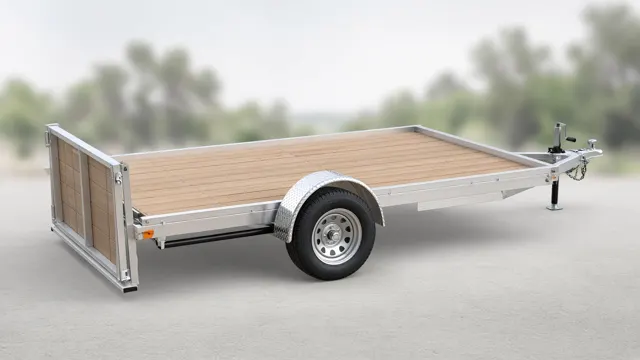

Planned through K2 Designs Ltd, a Dracon Group company (incorporation in progress). Laser-cut metal signs and decor in a standard 2 ft x 2 ft format: family monograms, address plaques, Newfoundland coastal scenes such as Lighthouse, Puffin & Waves, cabin and memorial signs, and Tree of Life decor. Planned finishes are black powder coat, rust patina or brushed stainless, with a proof to approve before anything is cut. Larger signs and laser-cut parts up to 10 mm carbon steel (5 mm stainless) are planned too, with plasma-cut parts up to 1" thick on a Tracker CNC 4 ft x 8 ft Nitro plasma table and colour-marked and engraved items made on the xTool F2 Ultra.
Planned through K2 Designs Ltd, a Dracon Group company (incorporation in progress). Small laser-cut and engraved goods: coastal silhouette keychains, ornaments, garden markers and pantry labels, bottle openers, camp tools, coasters, pet tags, ID tags and leatherette items, personalized with names, dates and initials. Not yet for sale; these will be offered from Q3 2027.
A planned line of faceted steel fire pits: Emberwing, the flagship faceted octagon bowl; Ironclaw, a hex pit on claw legs; Draco, a pyramid fireplace with a scale-screen door; and Drake, a compact faceted hex. Wings, claws, scales and flames are cut through and lit by the fire. Concept stage; sizes to be confirmed at prototype.
One-off builds in steel, such as chairs and welding tables, to be made to order from Q3 2027.
In design
UTV accessories (in design)
Planned DR-UTV and DWS-UTV accessories, now in draft design: bed rack and roof rack, winch mount plate, plow push tube and mount, rear 2 in receiver hitch, winch-ready front bumper, skid plates and sliders, spare tire carrier, gun and bow racks, cargo, fuel and cooler carrier, half doors, and light bar brackets. Not yet for sale.

Design render
Draco aluminum utility trailers (planned)
A planned line of aluminum utility trailers, to be built to order in Burin once Transport Canada National Safety Mark authorization is in place. Aluminum frame, treated wood deck standard with an aluminum deck option, and an LED lighting package. Not yet for sale.
Starting Q3 2027, K2 Designs (a Dracon Group company) will be glad to look at your napkin sketch or rough idea and turn it into a practical design and a finished piece. Email your idea to draconwelding@gmail.com, and please leave out personal or sensitive information. Sending an idea is not an order. Every project starts with a written quote, and design time may be quoted separately. Your idea stays yours, and we treat what you send as confidential. Some projects may need an engineer's design or approval.
No products are for sale yet. Design renders are concepts, not photos of finished products. Specifications are approximate.
Questions about Dracon?
Dracon services begin Q3 2027. For information, get in touch.